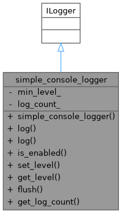
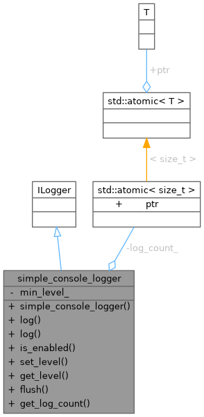
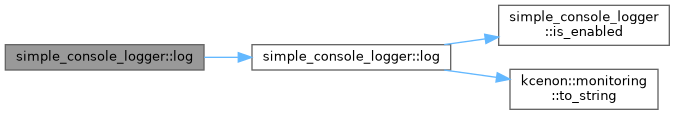
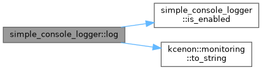

- Generated by
 1.12.0
1.12.0
|
Monitoring System 0.1.0
System resource monitoring with pluggable collectors and alerting
|
Simple logger implementation for demonstration. More...


Public Member Functions | |
| simple_console_logger (log_level min=log_level::debug) | |
| kcenon::common::VoidResult | log (log_level level, const std::string &message) override |
| kcenon::common::VoidResult | log (const log_entry &entry) override |
| bool | is_enabled (log_level level) const override |
| kcenon::common::VoidResult | set_level (log_level level) override |
| log_level | get_level () const override |
| kcenon::common::VoidResult | flush () override |
| size_t | get_log_count () const |
Private Attributes | |
| log_level | min_level_ = log_level::debug |
| std::atomic< size_t > | log_count_ {0} |
Simple logger implementation for demonstration.
Definition at line 30 of file logger_di_integration_example.cpp.
|
inlineexplicit |
Definition at line 36 of file logger_di_integration_example.cpp.
|
inlineoverride |
Definition at line 84 of file logger_di_integration_example.cpp.
|
inlineoverride |
Definition at line 80 of file logger_di_integration_example.cpp.
References min_level_.
|
inline |
Definition at line 89 of file logger_di_integration_example.cpp.
References log_count_.
|
inlineoverride |
Definition at line 71 of file logger_di_integration_example.cpp.
References min_level_.
Referenced by log().
|
inlineoverride |
Definition at line 63 of file logger_di_integration_example.cpp.
References log().

|
inlineoverride |
Definition at line 39 of file logger_di_integration_example.cpp.
References is_enabled(), log_count_, and kcenon::monitoring::to_string().
Referenced by log().

|
inlineoverride |
Definition at line 75 of file logger_di_integration_example.cpp.
References min_level_.
|
private |
Definition at line 33 of file logger_di_integration_example.cpp.
Referenced by get_log_count(), and log().
|
private |
Definition at line 32 of file logger_di_integration_example.cpp.
Referenced by get_level(), is_enabled(), and set_level().